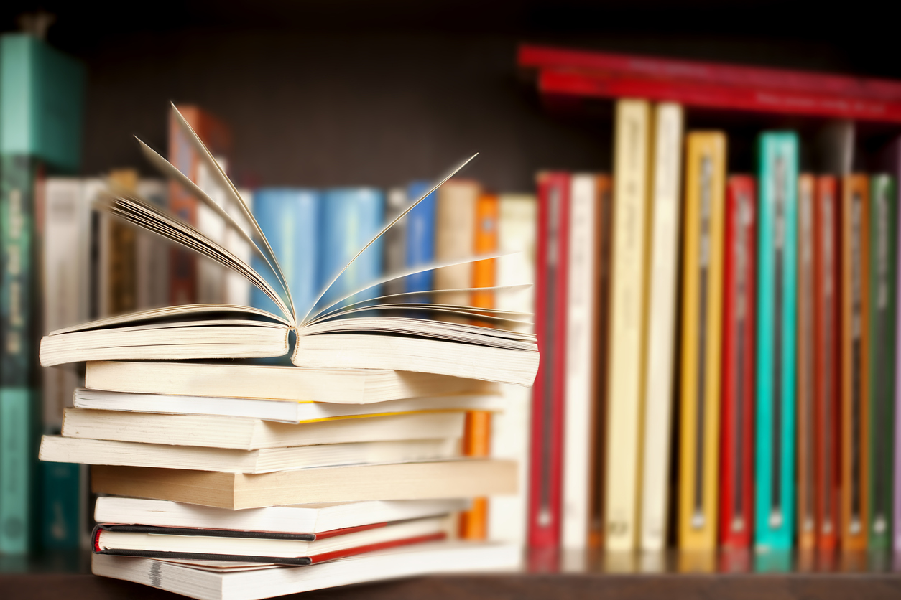
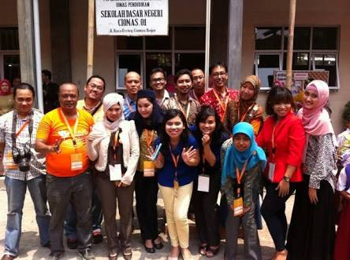
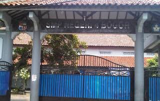
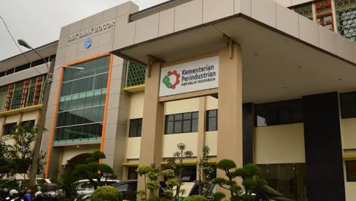

Full Name: Nimas Siti Yulia Rasmawati
Nick Name: Nimas
Adress: Ciomas Harapan street number 30, Ciomas, Kabupaten Bogor
Place, Date of Birth: Bogor,January 11th 2001
Ages: 17 years old
Gender: Female
Religions: Moslem
Email Address: nimasrasmawati22222gmail.com
Phone Number: 08212795090705
Instagram account: @nimasSYR
Future Goals:
- To be a doctor
- Be nice person for everyone
- Graduate from SMAKBO with the good grades
- Get a decent job with a high salary
- Make My parent and My Family happy
Hobbies:
- Reading a books

- Travelling

- Watching a movies
1. SDN 01 ciomas

2. SMPN 4 Bogor

3. SMK-SMAK Bogor

Nama Saya Nimas Siti Yulia Rasmawati. Biasanya saya dipanggil Nimas. Saya berasal dari Bogor. Tepatnya di Ciomas.Sejak kecil saya sudah tinggal di bogor. Sekarang umur saya 17 tahun. Saya anak pertama dari 2 bersaudara.Saya sekarang duduk di kelas 11 di SMK-SMAk Bogor sekarang. SMK-SMAK Bogor adalah sekolah dengan jurusan teknik kimia. Saya dapat masuk ke SMK-SMAK Bogor melalui jalur prestasi.
Ketika saya masuk SMK- SMAk Bogor banyak hal baru yang saya dapati. Dari mulai teman -teman yang sangat berbeda sifatnya satu sama lain, sistem belajar yang sangat baik dan membuat saya harus benar benar , dan guru - guru yang sabar membimbing. Saya berusaha untuk selalu belajar dengan baik di SMK-SMAK Bogor agar saya dapat lulus dengan nilai yang baik dan memuaskan sehingga dapat membahagiakan orang tua dan keluarga. Selain itu juga agar dapat mendapatkan pekerjaan yang baik ketika lulus nanti.
Saya memiliki dua hobi yaitu travelling dan membaca buku. Saya sangat suka sekali mengunjungi tempat- tempat yang memiliki suasana alam yang menyenangkan danjuga memiliki pemandangan yang sangat indah. Tempat-tempat itu seperti pantai, curug, dan gunung. Tempat yang akhir- akhir ini Saya kunjungi adalah salah satu curug di daerah Cibuluh,Cigudeg. Perjalanan untuk sampai ke sana sekitar 4 jam. Dimana lajur yang dilewati sangat berliku dan terjam. Belum lagi untuk mencapai curug tersebut harus melewati sawah,sungai, dan bebatuan. Yang kedua hobi Saya adalah membaca. Saya sangat suka membaca buku-buku seperti novel, dan buku kimia. Novel yang biasanya Saya baca adalah novel-novel karya Tere Liye,Andrea Hirata, dan Pidi Baiq. Saya biasanya membaca saat Saya memiliki waktu luang biasanya di sore hari dan sebelum tidur. Saya sangat suka membaca karena membaca itu penting dan dengan membaca juga dapat menambah wawasan. Karena, ada pepatah yang mengatakan membaca itu adalah sebuah kebahagian. Jadi, dengan membaca akan membuat merasakan kebahagiaan.